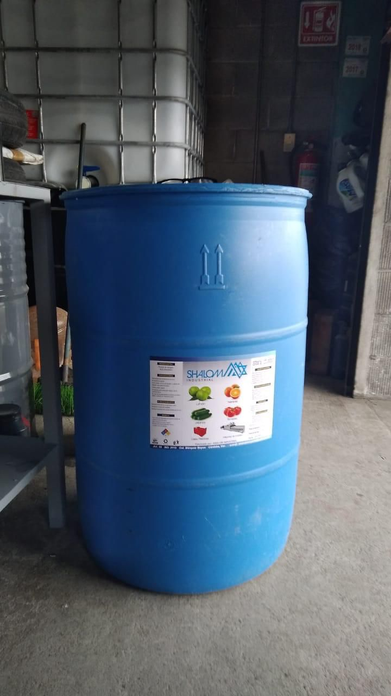
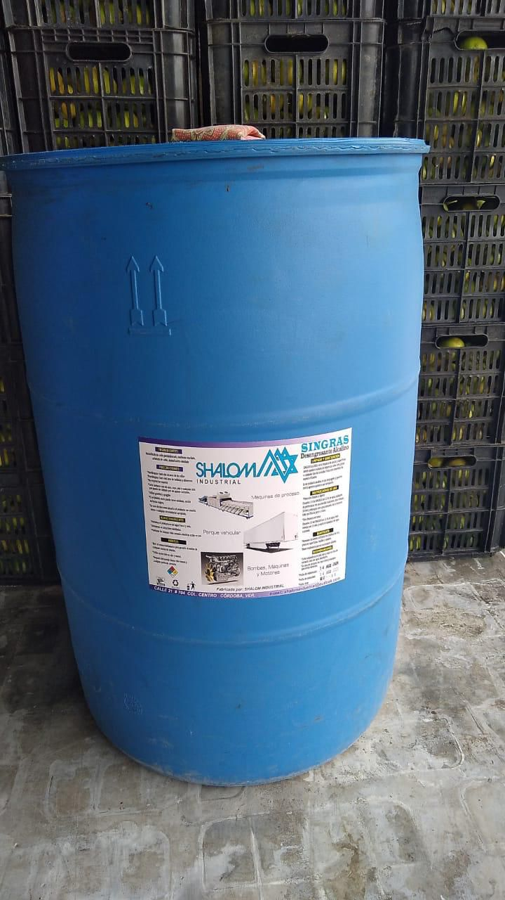
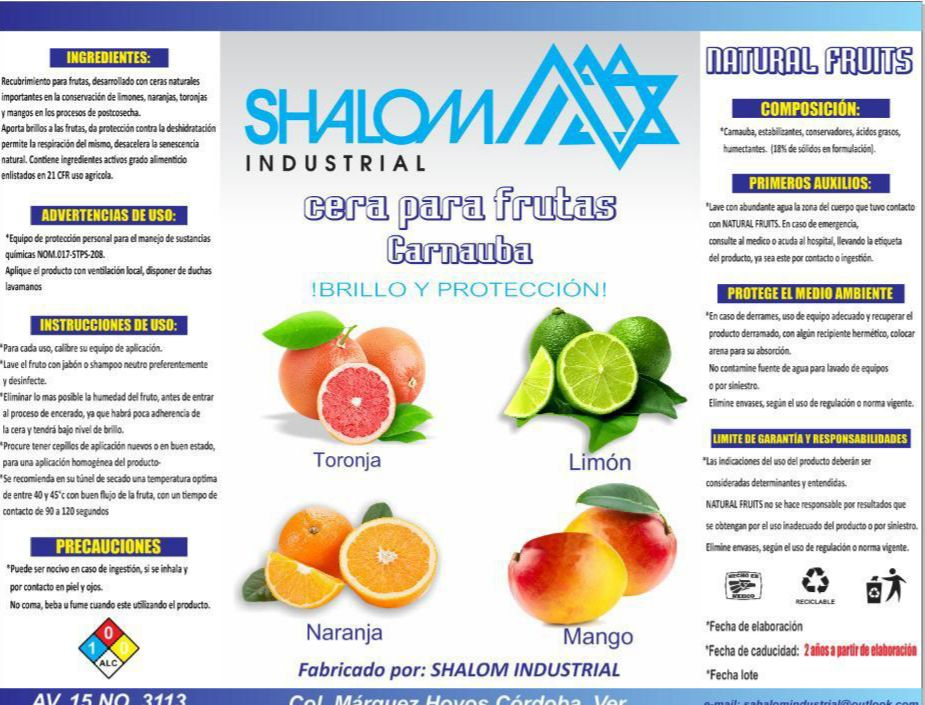

En Shalom,nos dedicamos a ofrecer soluciones especializadas para el cuidado, protección y presentación de frutas, destacándonos particularmente en la elaboración de ceras de alta calidad para cítricos como limón y naranja. Nuestro compromiso es ayudar a productores, distribuidores y comercializadores a mantener la frescura, el brillo y la vida útil de sus productos, cumpliendo con los más altos estándares de calidad. Entendemos que la apariencia y conservación de la fruta son factores clave en su valor comercial. Por eso, nuestras ceras están formuladas para brindar una cobertura uniforme que protege la fruta contra la pérdida de humedad, mejora su resistencia durante el transporte y resalta su aspecto natural,给它 that brillo atractivo que capta la atención del consumidor final.
Cera formulada para la protección postcosecha de frutas, que ayuda a conservar la frescura, mejorar la resistencia durante el transporte y mantener una presentación atractiva en el mercado.

Realza su apariencia, aportando un brillo uniforme y atractivo. Además, crea una capa protectora que ayuda a conservar la frescura, mejorar la resistencia durante el manejo y prolongar su vida útil en el mercado.

La cera carnauba es una cera vegetal de alta pureza, reconocida por su dureva y capacidad de formar películas protectoras. Se utiliza en recubrimientos postcosecha para mejorar la conservación, reducir la deshidratación y optimizar la presentación de frutas.

Sanitizante diseñado para la desinfección en procesos agrícolas y postcosecha, que ayuda a controlar microorganismos y garantizar condiciones higiénicas, contribuyendo a la calidad y seguridad del producto.